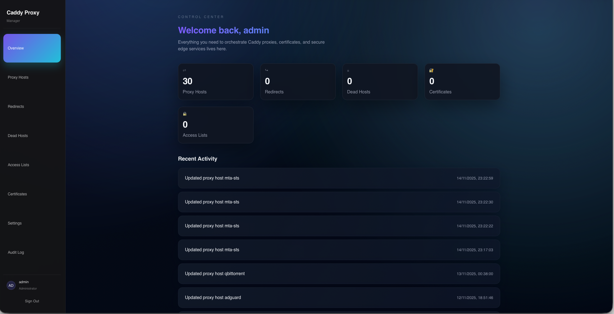
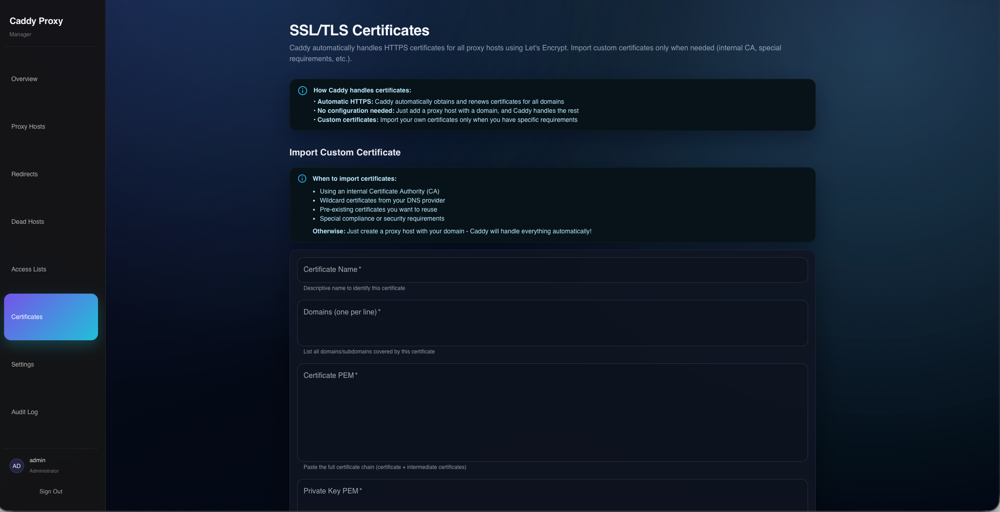

Reverse Proxy Management
Configure reverse proxies, set custom headers, and manage domain routing through an easy-to-use web interface.
Web UI for Caddy Server
Caddy Proxy Manager provides a web-based control panel for managing reverse proxies, certificates, and configurations. Built with Next.js and featuring a clean dark interface.
Key Features
Manage your Caddy server configuration through an intuitive web interface with built-in security and audit logging.
Configure reverse proxies, set custom headers, and manage domain routing through an easy-to-use web interface.
Automatic ACME certificate provisioning with Cloudflare DNS-01 support, plus manual certificate imports for custom setups.
Complete audit trail of all configuration changes with timestamps and user attribution for accountability.
Strong password requirements, secure session management, rate limiting, and HSTS headers protect your installation.
Screenshots



Technology Stack
Built with modern web technologies and integrates directly with Caddy's Admin API for real-time configuration management.
Server-side rendering with React Server Components for fast page loads and smooth interactions.
Drizzle ORM with SQLite for storing proxy configurations, certificates, and audit logs.
Direct integration with Caddy's JSON API for applying configuration changes in real-time.
Quick Setup
Get started quickly with Docker Compose. The setup includes persistent storage and environment-based configuration.
# Clone and enter
git clone https://github.com/fuomag9/caddy-proxy-manager.git
cd caddy-proxy-manager
# Configure secrets
cp .env.example .env
# ADMIN_USERNAME=your-admin
# ADMIN_PASSWORD=your-strong-password
# SESSION_SECRET=$(openssl rand -base64 32)
# Launch the stack
docker compose up -d